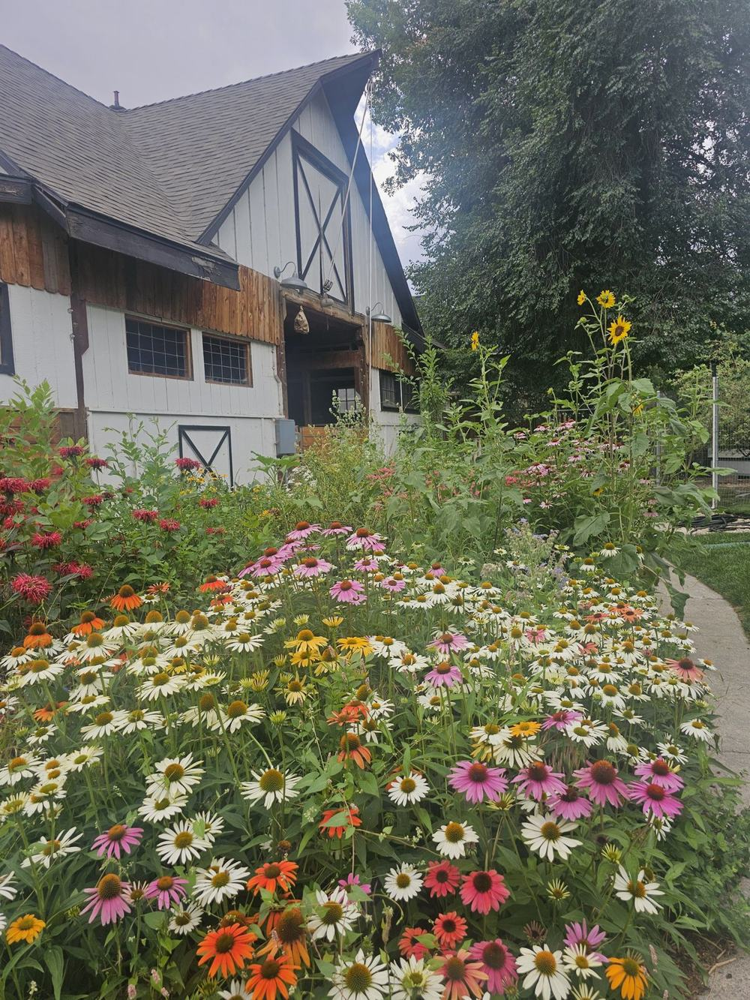
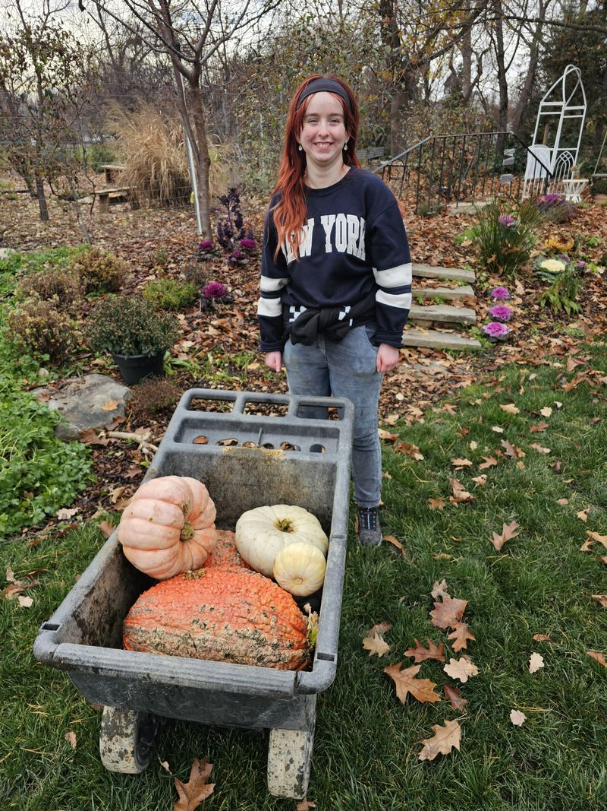
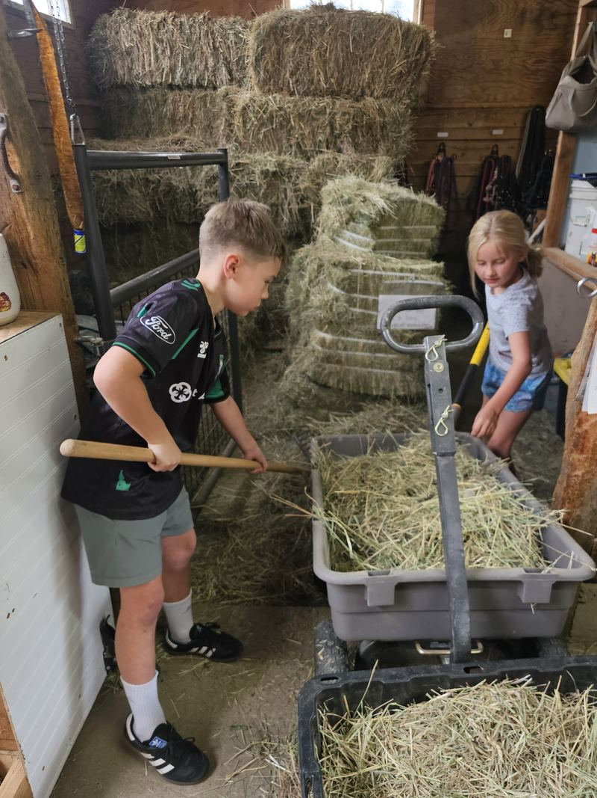
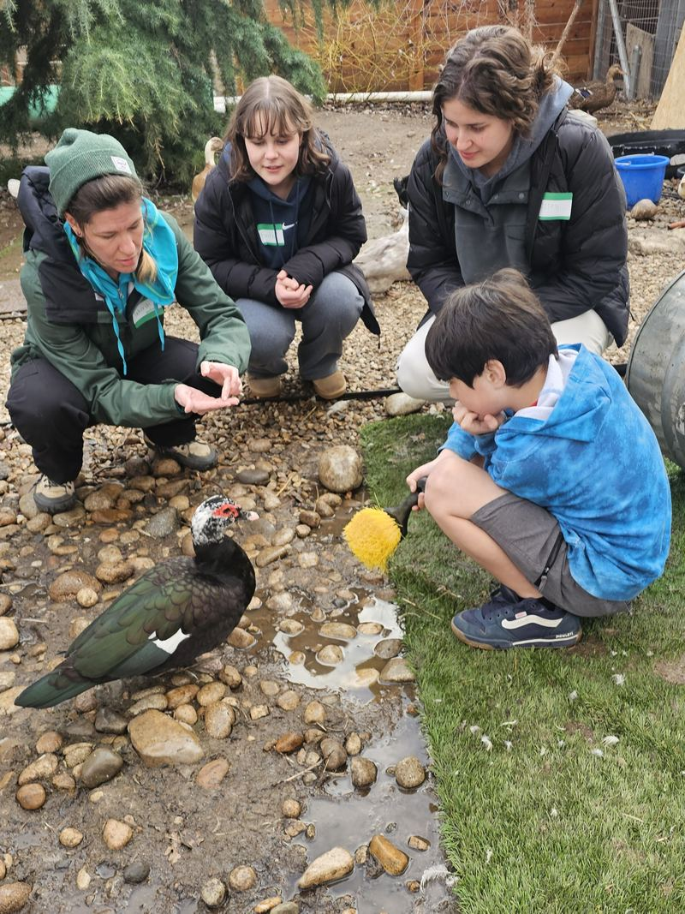
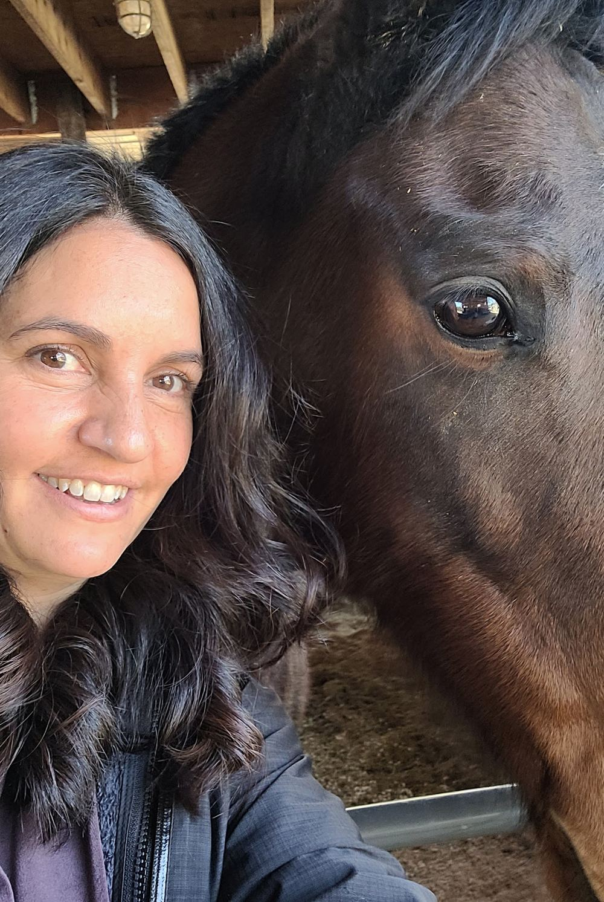

A place to heal, connect, and grow
Warm Springs Care Farm is located in Boise's East End. Children, teens, and families come here to slow down, care for animals, and build calm and confidence. We are a 501(c)(3) nonprofit.

Our mission and vision
Our Mission
To improve the mental health and well-being of children, teens, and families through hands-on, nature-based experiences on a working care farm.
Our Vision
A place where people and animals connect, heal, and grow together, and a model other communities can learn from and build their own.
What is a care farm?
A care farm is a nature-based community space where agricultural and animal-care activities are used to promote health, well-being, and belonging.
What kids take home
A working farm, not a petting zoo
Kids at Warm Springs don't watch the farm run. They help run it. Along the way they build three things they carry home.

Calm
Animals set a slower pace. Kids learn to match it, and to find that steady feeling on their own.

Confidence
Every child has a job, and every job matters. A goat that gets fed on time is proof they can do hard things.

Connection
Small groups mean every kid is known by name. Teen leaders show them the ropes, and friendships grow from shared work.
Find your way in
Families, volunteers, schools, and supporters all contribute to making our community strong.
For families
Programs
Barn Club, Pre-4-H Club, field trips, partner classes, and farm-based therapy.
Explore programsFor helpers
Volunteer
Teens, adults, families, and groups keep the animals fed and the gardens growing.
Lend a handFor supporters
Give
Gifts pay for feed, vet care, scholarships, and the daily work of the farm.
Support the farmTherapist, school counselor, or pediatrician? See how farm-based therapy referrals work.
“For me, looking forward to going to the farm is what gets me through the day. Every time I come, I enjoy working with my hands, because it lets me process and slow down, and makes me feel so peaceful after.”
Teen volunteer
Meet the founder
Linda Haley
Linda is an educator and gardener who built the farm on a belief she formed in classrooms and gardens: kids feel calmer and more capable when they have real work to do, living things to care for, and adults who notice what they do well.
She teaches every child the same three steps: notice what needs doing, get what you need, and go do it. Now she is documenting how Warm Springs works, so other communities can build care farms of their own.

Get farm news
Seasonal updates, event dates, and stories from the barn, a few times a season.